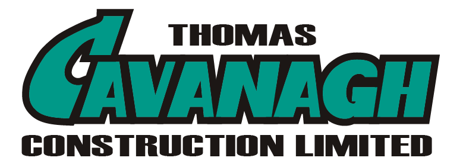

The support page names crashes, freezes, and service connection issues. The privacy page says no crash-reporting SDK is integrated.

Prepared for Jim Orban
Helping Cavanagh Connect scale field workflows without slowing crews
We looked at Cavanagh Connect, your support pages, and the public developer role. The common thread is clear: mobile field work now depends on Foundry-backed delivery.
Saw you are hiring an Intermediate Software Developer for Foundry apps, TypeScript/Python services, SQL pipelines, and on-site discovery. That points to a digital transformation program moving from launch to scale.
Our read
Cavanagh Connect is already more than an employee app. It handles timecards, time off, company news, jobsite alerts, and HR/payroll/IT requests. The new developer role says the next bottleneck is not one screen. It is steady delivery across Foundry workflows, SQL data models, and field adoption. If that load stays on a small team, useful apps can ship slowly or miss jobsite reality. The risk is simple: crews keep using side channels while the business still pays for the platform.
Where we'd start
Add a privacy-safe release-health loop before new modules. Also move the privacy link into Settings before wider rollout.
What we'd do
We would start with a dedicated squad under your Product Owner. The first pilot would be six weeks, with weekly demos and one production-ready workflow.
Mobile lead
TypeScript/Python engineer
SQL/Foundry engineer
QA automation
UX/BA support
1
Map active flows
Map the active Foundry apps, Cavanagh Connect screens, and field handoffs that drive timecards, alerts, and helpdesk requests.
2
Add release health
Add release telemetry, crash triage, and service checks so the team sees breakage before crews report it.
3
Ship one workflow
Build one high-value Foundry workflow in TypeScript/Python, with SQL models reviewed for audit and retention needs.
4
Test on site
Run jobsite demos with foremen and office users, then ship improvements on a weekly cadence.
React Native
TypeScript
Python
SQL
QA automation
DevOps
Who is Elinext
Proof

Fleet management app
Elinext built a React Native and TypeScript app for live driver task updates and location streams.
Read the case study
Warehouse workflow systems
Elinext supported Android, SQL, backend services, QA, and consulting for barcode-driven warehouse workflows.
Read the case study